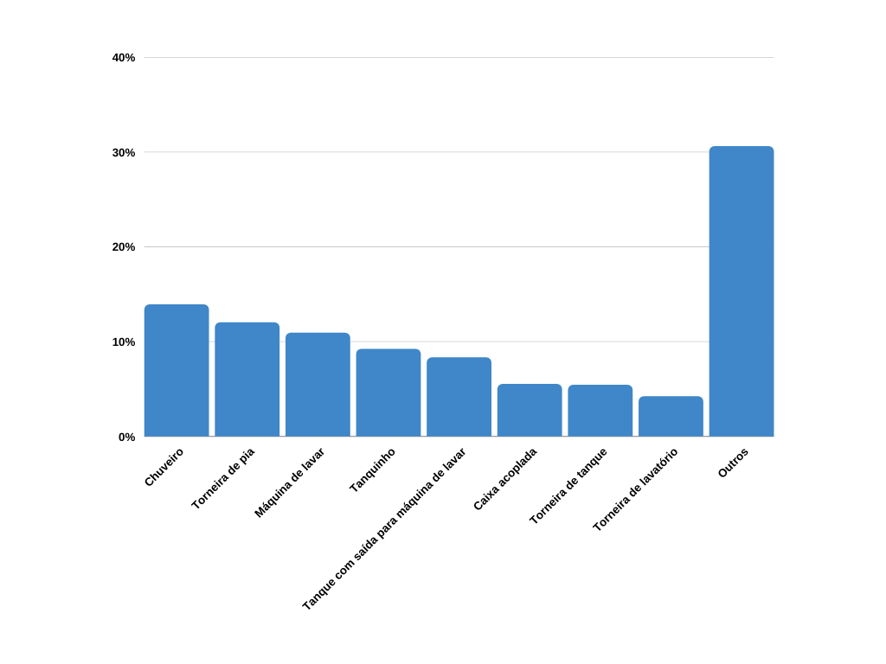

ARTIGO
Você Sabe O Quanto de Água Consome Na Sua Casa?
Com os resultados da pesquisa feita por Douglas Barreto: Perfil do consumo residencial e usos finais da água, com moradores de residências localizadas na zona oeste da cidade de São Paulo, revelando a porcentagem de consumo de utencílios domésticos em relação a quantidade de água gasta neles e usos finais da água.
Confira o gráfico a seguir que mostra, em porcentagem, os utencílios que mais utilizaram dentre os moradores do estudo realizado:
Consumo Residencial Percentual de Água
De acordo com o gráfico apresentado acima, o chuveiro foi o eletrdoméstico que apresentou maior porcentagem de consumo do total da residencia, com 13,9%; em seguida a torneira de pia, com 12%; a máquina de lavar, com 10,9%; tanquinho, com 9,2%; tarneira de tanque com ligação com a máquina de lavar, 8,3%; caixa acoplada, 5,5%; torneira com tanque, 5,4 e torneira de lavatório com 4,2%. Sendo que dessa porcentagem total, os outros 30,6% equivalem a outros usos domésticos.
Dessa forma, o conhecimento do perfil de consumo e usos finais da água se torna uma informação primordial para encetar ações de controle de demanda e também de racionalização do uso da água no cenário urbano. (BARRETO, 2008, p. 24)
Para mais informações detalhadas sobre esta pequisa, confira a referência abaixo onde se encontra o artigo:
Referências
BARRETO, D. Perfil do consumo residencial e usos finais da água. Revista on-line da ANTAC, 2008. Disponível em: (link). Acesso em: 19 de novembro de 2021.